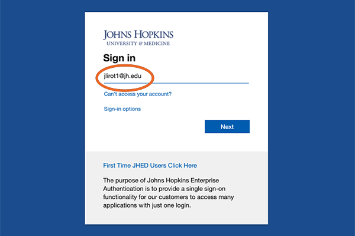
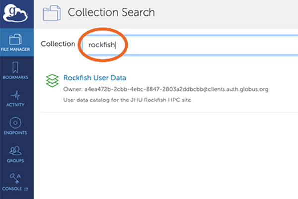
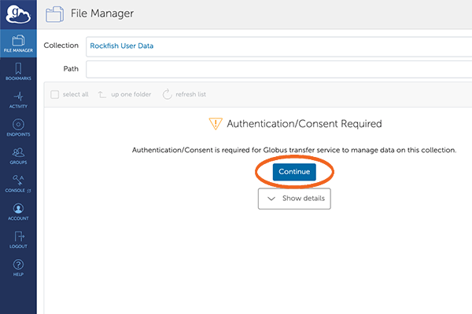
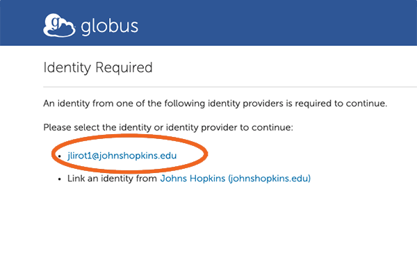
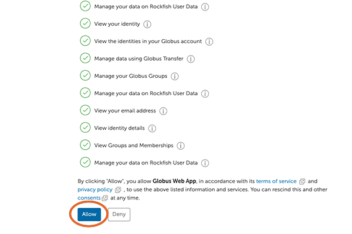
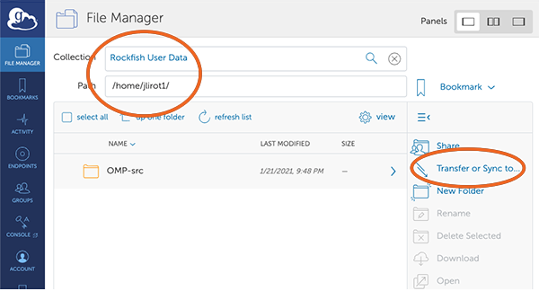
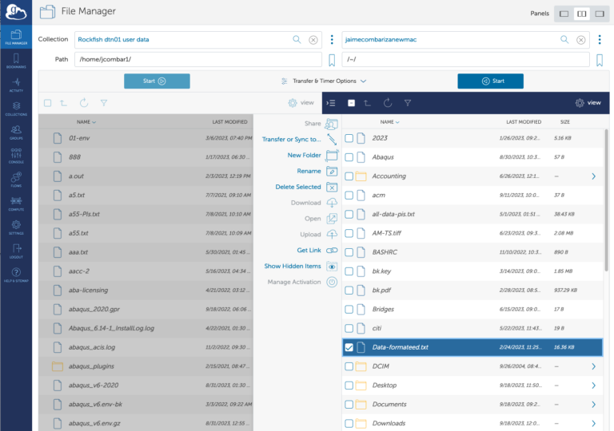
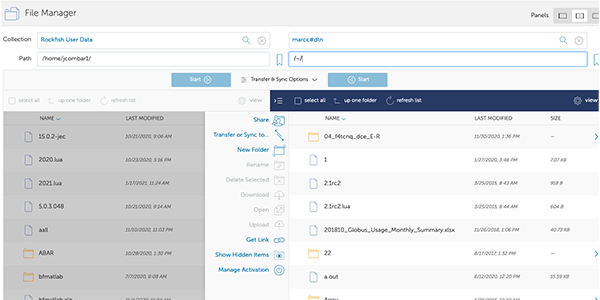

File Transfers
Copy Files with SCP
Use the scp command to copy files or directories to Rockfish:
scp -r <DIR> <userid>@rfdtn1.rockfish.jhu.edu:/scratch16/<PI-id>/<userid>/
Synchronize with Rsync
Use rsync for efficient file syncing:
rsync -rav ~/data <userid>@rfdtn1.rockfish.jhu.edu:~/data/
rsync -rav --delete --exclude-from=~/exclude.txt ~/data <userid>@rfdtn1.rockfish.jhu.edu:~/data/
Note
--deleteremoves files not present in the source--exclude-fromuses a file to skip listed files
Data Transfer with Globus
The recommended method for transferring large data files to and from the Rockfish cluster is to use Globus. Globus manages transfers reliably in the background, handling restarts if interruptions occur.
1. Connect to Globus
Use your browser to visit: https://www.globus.org

2. Search for Johns Hopkins
Search and select “Johns Hopkins” as your institution.

3. Log in with JHED ID
Use your JHED ID to log in through the Johns Hopkins SSO portal.
{kind=link}
4. Search for the Rockfish Collection
After logging in, search for the collection “rockfish” in the Collection Search screen. Click on “Rockfish User Data” when it appears.
{kind=link}
5. Authenticate Access
You’ll be prompted to authenticate with the “Rockfish User Data” collection. This is required on first access or after removing the collection.
Click “Continue”.
{kind=link}
6. Select Your JHED Identity
Choose your JHED ID from the list of available identities.
{kind=link}
7. Allow Access to the Globus Web App
Scroll to the bottom and click “Allow” to authorize access.
{kind=link}
8. Rockfish Endpoint
Once authorized, you will see the Rockfish endpoint connected (your HOME directory).
{kind=link}
9. Choose a Second Endpoint
On the other side of the interface, select a second endpoint. This could be: - A Globus Connect Personal instance (e.g., your laptop) - An HPC system like Bridges2
{kind=link}
10. Authentication for Second Endpoint (if needed)
You may be asked to authenticate to the second system. If using your own Globus Connect Personal setup, you might not need additional authentication.
11. File Manager View
You’ll now see a split-pane interface. The left side shows your Rockfish files. The right side shows your selected endpoint.
{kind=link}
12. Start File Transfer
To transfer files: - Select the folder or files (e.g., “OMP-src”) on one side. - Click “Start” to begin the transfer.
You can also open “Transfer & Sync Options” to configure behavior like sync mode or overwrite rules.